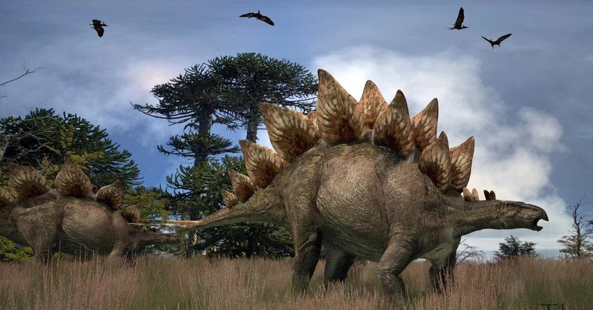

Стегозавры
Стегозавры (лат. Stegosauria) — клада птицетазовых динозавров подотряда тиреофор, которой разные систематики присваивают ранг от семейства до отряда. Характерная особенность стегозавров — наличие двух рядов костных пластин, которые тянутся от шеи до кончика хвоста, а также дистальных хвостовых шипов.
Представляли собой четвероногих растительноядных животных и весили примерно столько же, сколько современные носороги. Вероятно, были медлительны и не приспособлены к бегу. Обладали очень маленькими зубами. Жевательный аппарат отсутствовал, но несмотря на это сила их укуса указывает на то, что они могли есть жесткую растительность и небольшие ветки растений. Точное предназначение и функции пластин стегозавров неизвестны. Предполагается, что разные виды имели пластины различной формы, что указывает на их роль в демонстрации или отпугивании хищников.
Самые ранние ископаемые остатки стегозавров известны из средней юры. Наибольшего распространения достигли в конце юрского периода. Разнообразие стегозавров, по-видимому, уменьшилось после юрского периода, и они, похоже, вымерли к среднему меловому периоду. Некоторые ископаемые свидетельства говорят о существовании стегозавров вплоть по конец мелового периода (66 млн лет назад). Известны на всех континентах, кроме Антарктиды и Австралии.
В настоящее время признано четырнадцать действительных родов. Фрагментарный ископаемый материал препятствует попыткам исследовать взаимосвязь между представителями стегозавров, а таксономия различных видов и родов продолжает постоянно меняться.
Классификация стегозавров
- Стегозавриды
- Сцелидозавриды